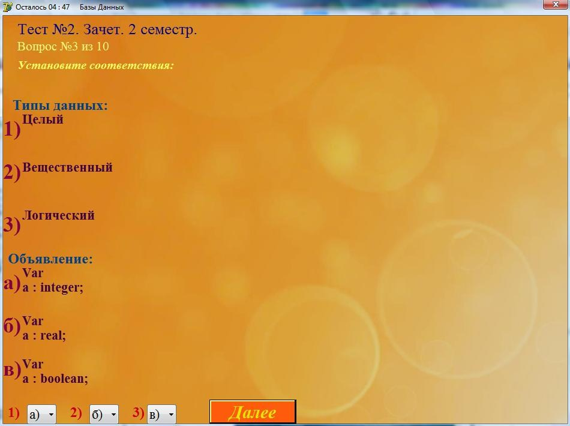

Тестирование.
Для того чтобы студент приступил к тестированию, ему необходимо запустисть файл "Stud.exe".
Появится форма "Тестирование". Эта форма содержит следующие поля: "Фамилия Имя", "Группа".Форма выглядит следующим образом(рис.1):
(рис.1)
После заполнения полей нужно нажать кнопку "Далее", из выпадающего списка выбрать дисциплину и тему, по которой будет проходить тестирование.
После того как студент заполнил форму, выбрал дисциплину и тему и нажал "Далее". Появится пустая форма "Тестирование" (рис. 2), которая содержит только кнопку "Начать". Чтобы приступить к прохождению теста, необходимо нажать на эту кнопку.
(рис.2)
После того как студент нажимает кнопку "Начать", начнется обратный отсчет времени отведенного на прохождение теста (рис.3) и на форме появляется первый вопрос.

(рис.3)
Типы вопросов используемых в этой программе:
Каждый тип вопроса содержит:
- Название темы, по которой проходит тестирование
- Номер вопроса
- Сам вопрос
I Вопрос с одним правильным вариантом ответа
Форма содержит 4 варианта ответа, студент должен выбрать один из них. Если студент не выберет вариант ответа, то это будет считаться ошибкой.
II Вопрос с двумя правильными ответами
Форма содержит 4 варианта ответов, студент должен выбрать два ответа из них. Если студент выберет меньше, больше двух или не выберет вообще, то это будет считаться ошибкой.
III Вопрос с вводом ответа
Форма содержит поле для ввода ответа, студенту необходимо ввести ответ (с маленькой буквы) в это поле. Если поле останется пустым, то это будет считаться ошибкой.
IV Вопрос на установление соответствий

Форма содержит 2 группы соответсвий, в каждой по три соответствия и 3 раскрывающихся списка, предназначенных для установления соответствий.
Окончание тестирования
После окончания теста на экран выводятся результаты тестирования и для удобной проверки, результаты отправляются на компьютер преподавателя.
Тест может закончится по двум причинам:
- Студент ответил на все вопросы.
- Кончилось время, отведенное на прохождение теста.